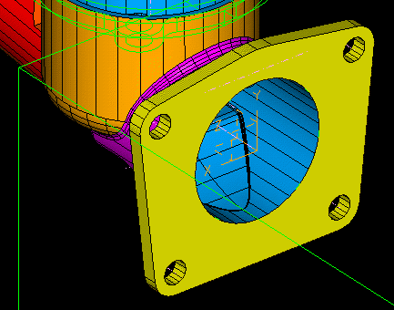

| Next Page | Previous Page | First Page |

Modify the corner radius to R 7.5mm


Drag the dimensions shown to the values
shown.
(NB. I've just hidden the other dimensions
to make this picture more understandable.)
(Hint: You may need to drag the R34
before the 72.)
"As a designer I can explicitly change dimension sizes, or I can drag them to the size required. This gives me the freedom to study the design intent."



Extrude the section as shown 5mm.
Extrude, pick section (don't forget the holes), Flip Direction, Distance 5mm, <OK>
"Create the basic shape of the flange to be bolted or screwed to the block."


Put Away your partly completed part.
Get the completed part called Filter Connector Complete to the workbench.
"If I continue with the design I can add more detail and complete the job. But here is one I completed earlier."